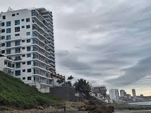
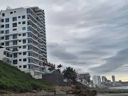
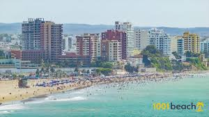
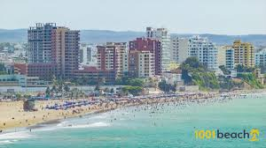

Es el primer puerto turístico, marítimo y pesquero del Ecuador, donde cada año llegan decenas de cruceros. Tiene gran actividad de exportación e importación. Cuenta con un aeropuerto internacional.
Es llamada “La Puerta del Pacífico” por ser uno de los principales puertos para la economía ecuatoriana. En el censo de 2010 tenía una población de 217.553 habitantes, lo que la convierte en la séptima ciudad más poblada del país.
Manta es una ciudad de desarrollo que se encuentra ubicada en la Provincia de Manabí, lo cual se caracteriza por sus actividades pesqueras, comerciales y turísticas, por lo tanto, hace que Manta sea una de las ciudades más atractivas del Ecuador; su riqueza cultural, la diversidad de sus paisajes y climas y el crecimiento económico experimentado durante los últimos años hace que esta ciudad sea unos de los destinos para los turistas nacionales y extranjeros, personas migrantes que buscan establecerse en la ciudad y también para los trabajadores de los cantones aledaños que realizan sus actividades laborales en la ciudad y a pesar que el desarrollo económico de Manta está en un alto nivel
Cuenta con un aeropuerto internacional. En las playas de Santa Marianita y San Mateo se practican deportes extremos. Su actividad nocturna es intensa. En su interior cuenta con montañas como Pacoche, San Lorenzo y el Aromo, situados en el centro del territorio cantonal, que ofrecen vegetación y fauna, por donde se hacen recorridos de excursión.
 Ir a sitio geografico
Ir a Sitios turisticos
Ir a construmbres
Ir a galeria
Ir a sitio geografico
Ir a Sitios turisticos
Ir a construmbres
Ir a galeria
 

 
